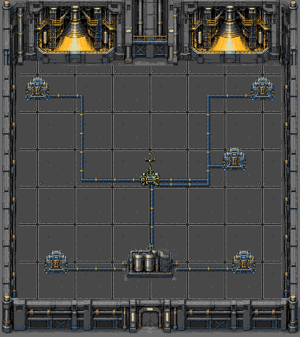
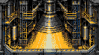

PLAGUEFALL / FASE 16 / REVISÃO LOCAL
O mesmo estaleiro, com novas janelas
Mesma sala de 512×576 das fases 14/15: piso rebitado, limites modulares, antena, bateria, conexões e cinco estações de energia ligadas. A fase 16 usa a mesma tabela de colisões da 15. Escorpião mantém seus ataques e vida originais.
Apenas os interiores das duas janelas superiores mudam. Módulo nativo 144×80, 16 cores e tiles 8×8, criado com ImageGen integrado a partir da janela existente. Moldura, soleira e todos os pixels externos conservam a arte aprovada da 15.
Documentação · Geometria e memória · Validação e ROM · ROM · Prompt exato
Cenário completo

Composição nativa512×576. Somente o interior das janelas difere da sala 15.Interior da janela

144×80pixels, paleta existente de 16 cores; a mesma peça aparece nas duas janelas.Capturas reais da ROM em NTSC
 Janela nativa e limite superior
Janela nativa e limite superior Mesma antena e conexões da 15
Mesma antena e conexões da 15 Mesma bateria e limite inferior
Mesma bateria e limite inferior Chefe original no estaleiro ampliado
Chefe original no estaleiro ampliado Pausa
Pausa Chefe derrotado por comandos do controle
Chefe derrotado por comandos do controleValidação
28 câmeras por região com comparação literal dos tiles e equipamentos em VRAM; zero falhas de cache. Travessia por controle, colisões, quatro limites, pausa, derrota/reinício e vitória contra o chefe passaram em NTSC/PAL. As regressões completas das fases 14 e 15 também passaram na mesma ROM, incluindo operação das estações e defesa de 120 segundos. Verificação geral de recursos, áudio, câmera e jogador aprovada.
| Região | Câmeras | Combate observado | Chefe derrotado |
|---|
| NTSC | 28 | 59.557 FPS | Sim |
| PAL | 28 | 49.822 FPS | Sim |
O ensaio de combate eleva vida e proteção do jogador uma vez por RAM; não altera vida nem IA do chefe. Esses FPS descrevem a tentativa observada, sem certificar todas as cargas possíveis. Hardware físico não testado.
480 tiles de cache + 53 de geradores + 45 de rádio = 578/640 residentes. Máximo conservador 470 padrões visíveis. Reconstrução exata e todos os pixels fora das janelas idênticos aos da 15. ROM SHA256: 856de009353a84f7564dc4d030a622e69ca2cfbc9b3ef86e87d502745d7e7601.